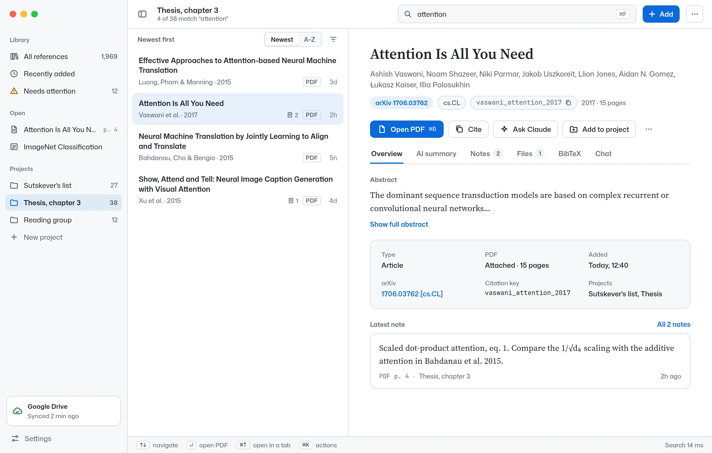
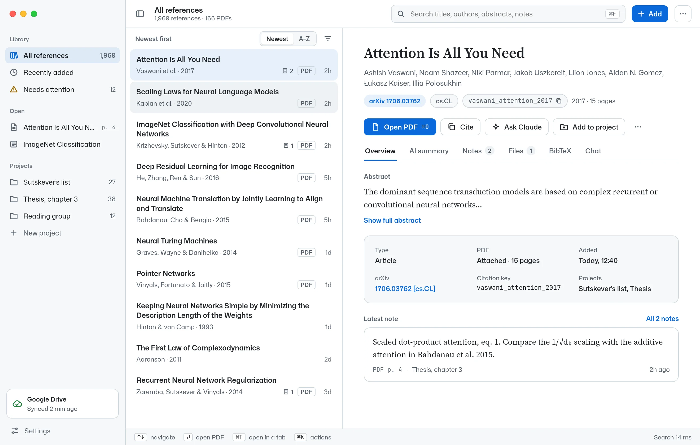
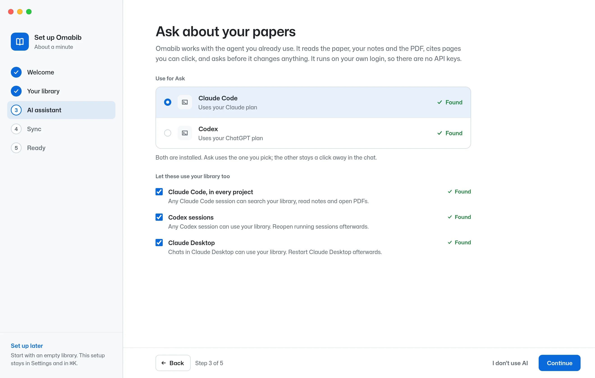
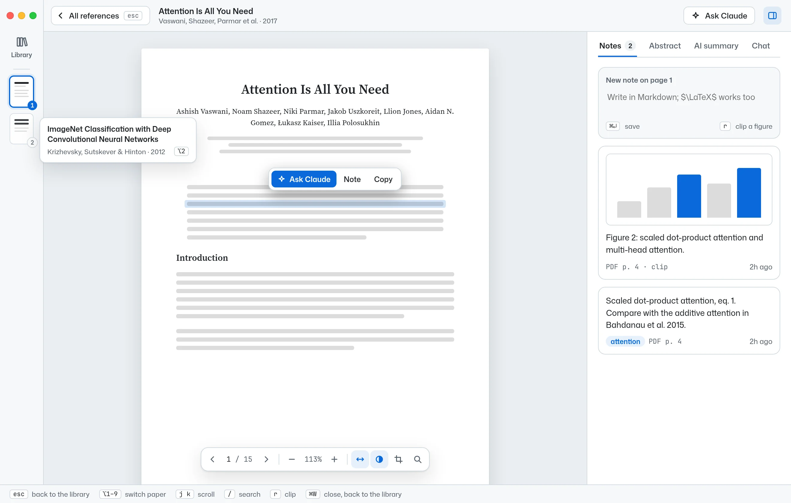
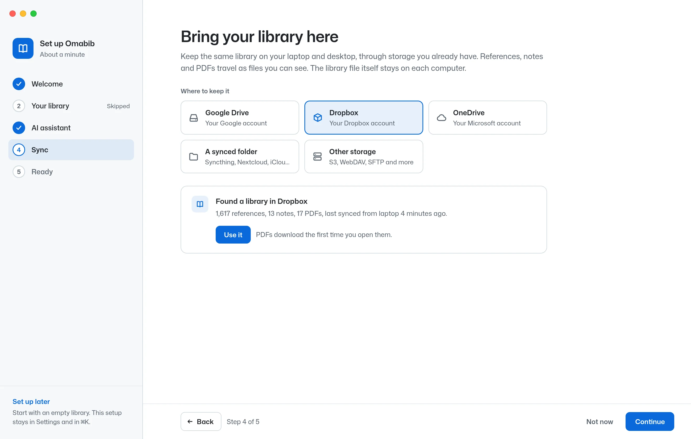

Fast search as you type
Results follow every keystroke, even in a large library. Small typos are forgiven, and inside a project your notes for it come first.
Omabib is a fast reference manager and PDF reader for Linux and macOS. Read, annotate and organize your literature with your own agent working alongside you: it reads the paper you have open, answers with page references, and saves notes when you ask. A fast MCP server is built in, so Claude Code, Codex or any other MCP client can use your library too.
curl -fsSL https://github.com/atomashevic/omabib/releases/latest/download/get.sh | sh

Pick one to see it in the app.

Results follow every keystroke, even in a large library. Small typos are forgiven, and inside a project your notes for it come first.
Ask about the paper in front of you. The agent reads the paper, your notes and the PDF, cites pages you can click, and asks before it changes anything. It runs on the plan you already have; Omabib adds no subscription.

Omabib ships its own MCP server, with nothing extra to install. Agents search your library, fetch many papers in one call, read notes and figure clips, and open PDFs, fast enough to keep up with a long research session. Notes are saved only when you ask.

Enter opens the paper in a tab and remembers your page. Scroll, zoom with the wheel, find with /, and switch the page to your theme’s colors for night reading.
Press r and drag over a figure, table or equation. It lands in a note with its page, sharp at any zoom, ready for you and your agent.

The same library on your laptop and desktop. Edits merge, PDFs come along, and the files stay readable in your own storage.
And a button too, for the mouse. On a Mac, ⌘ takes the place of Ctrl.
Omabib runs on your computer and keeps your library there. Sync goes straight to storage you already have. Omabib is free software under the AGPL.
Read the privacy policy →